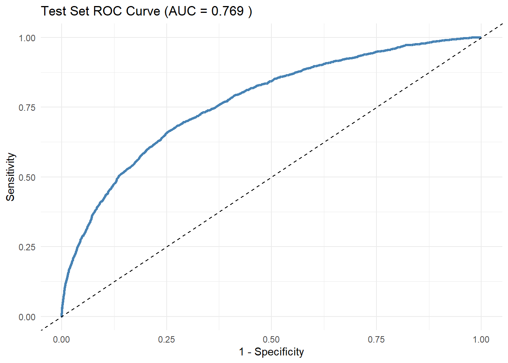

set.seed(42)
hf_data <- read_excel("simulateddata_LR_NL.xlsx") %>%
rename(
Outcome = outcome,
Age = age,
Sex = sex,
Creatinine = creatineDischarge,
Sodium = sodiumDischarge,
Potassium = potassiumDischarge,
Urea = ureaDischarge,
S_bp = sbpAdmission,
HR = hrAdmission,
Hb = hbDischarge,
Diabetes = diabetes,
COPD = copd,
IHD = ihd,
ValveDisease = valveDisease,
NYHA_class = nyha,
PeripheralOedema = peripheralOedema,
AF = af,
eGFR = egfr_full
)Heart Failure Risk Prediction Model
Data Preparation and Splitting
train_indices <- sample(seq_len(nrow(hf_data)), size = 0.7 * nrow(hf_data))
hf_train <- hf_data[train_indices, ]
hf_test <- hf_data[-train_indices, ]Model Fitting (Training Set) with Non-linear Age
dd <- datadist(hf_train)
options(datadist = "dd")
model_train <- lrm(Outcome ~
rcs(Age, 4) +
Sex +
rcs(Urea, 4) +
rcs(Creatinine, 4) +
rcs(Potassium, 4) +
IHD + COPD + Diabetes + ValveDisease + NYHA_class,
data = hf_train,
x = TRUE, y = TRUE)Discrimination (ROC and AUC) – Test Set
pred_test <- predict(model_train, newdata = hf_test, type = "fitted")
roc_test <- roc(hf_test$Outcome, pred_test)
auc_test <- auc(roc_test)
roc_df <- data.frame(
specificity = roc_test$specificities,
sensitivity = roc_test$sensitivities
)
ggplot(roc_df, aes(x = 1 - specificity, y = sensitivity)) +
geom_line(color = "steelblue", size = 1.2) +
geom_abline(linetype = "dashed") +
theme_minimal() +
labs(title = paste("Test Set ROC Curve (AUC =", round(auc_test, 3), ")"),
x = "1 - Specificity", y = "Sensitivity")
Calibration – Smoothed (Test Set)
calib_df <- hf_test %>%
mutate(pred = pred_test)
ggplot(calib_df, aes(x = pred, y = Outcome)) +
geom_smooth(method = "loess", se = TRUE, color = "firebrick", fill = "pink", span = 0.75) +
geom_abline(linetype = "dashed") +
theme_minimal() +
labs(title = "Calibration Curve (Test Set)",
x = "Predicted Probability",
y = "Observed Mortality")Goodness-of-Fit Summary: Training vs Test Set
# Training set predictions
pred_train <- predict(model_train, type = "fitted")
# Brier Score
brier_train <- mean((hf_train$Outcome - pred_train)^2)
brier_test <- mean((hf_test$Outcome - pred_test)^2)
# Calibration slope and intercept (test set)
cal_slope_model <- glm(Outcome ~ offset(qlogis(pred_test)), data = hf_test, family = binomial)
cal_intercept_model <- glm(Outcome ~ I(qlogis(pred_test)), data = hf_test, family = binomial)
cal_slope <- coef(cal_slope_model)
cal_intercept <- coef(cal_intercept_model)
# AUC
roc_train <- roc(hf_train$Outcome, pred_train)
auc_train <- auc(roc_train)
# Summary table
summary_df <- tibble::tibble(
Metric = c("AUROC", "Calibration Intercept", "Calibration Slope", "Brier Score"),
`Training Set` = c(round(auc_train, 3), 0, 1, round(brier_train, 3)),
`Test Set` = c(round(auc_test, 3), round(cal_intercept[1], 3), round(cal_slope[1], 3), round(brier_test, 3))
)
summary_df# A tibble: 4 × 3
Metric `Training Set` `Test Set`
<chr> <dbl> <dbl>
1 AUROC 0.768 0.769
2 Calibration Intercept 0 0.033
3 Calibration Slope 1 0.01
4 Brier Score 0.088 0.088